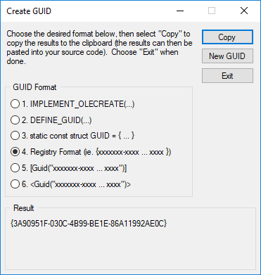
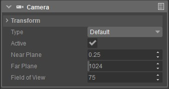
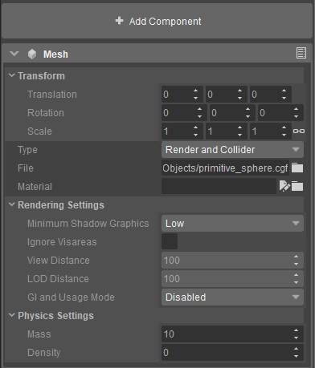

Overview
Components represent user-authored code that attach to Entities, known in code by the name IEntityComponent.
Type and Instance GUIDs
As seen in the minimal entity component implementation, each component type has to specify a GUID - used to uniquely identify this component implementation across the engine. This is stored as a CryGUID. Each component's type GUID is defined in its ReflectType function, for reference see the minimal component example.
In addition to the type GUID, each component instance is assigned a GUID. This is mostly used for internal purposes, but can also be used to query components using IEntity::GetComponentByGUID. The instance GUID of a component can be retrieved by calling IEntityComponent::GetGUID.
Generating GUIDs
GUIDs can be generated from Visual Studio by going to Tools -> Create GUID, bringing up the dialog below:

Once open, select 4. Registry Format and click Copy. This will place the generated GUID into your clipboard, ready for usage in the CRYENGINE codebase.
Events
Entities routinely send events of type EEntityEvent, for example ENTITY_EVENT_UPDATE - sent each frame to give components a chance to do per-frame logic.
Components can handle events by overriding the IEntityComponent::ProcessEvent function, and providing a bit-mask of the desired event in IEntityComponent::GetEventMask.
Transform
Each component can contain a transformation, supporting a relative offset of contained render or physical geometry from the parent entity. This is automatically exposed to the Sandbox Editor if EEntityComponentFlags::Transform is applied to the component type in its ReflectType call.
Once exposed, we can manipulate the world transformation of components using the following functions:
| Function name | Description |
|---|---|
| IEntityComponent::SetTransformMatrix | Sets the local transformation, in relation to the parent entities world transformation |
| IEntityComponent::GetTransformMatrix | Gets the local transformation, in relation to the parent entities world transformation |
| IEntityComponent::GetWorldTransformMatrix | Gets the world space transformation of the component, automatically applying the parent entities world transformation to the result |
In addition, each component can assign itself one entity slot that will be automatically moved with the component's transformation. This is made possible by loading geometry into the slot returned by IEntityComponent::GetOrMakeEntitySlotId.
Creating and Querying Components
Components can be created and queried using two kinds of functions; the Template helpers and low-level functions. The template helpers exist to simplify querying of a component type known at compile-time, while the low-level functions can be used to operate on components not known as the code is written.
We can also get components from an interface type, assuming that the interface implements ReflectType and is added to the implementation via the Schematyc::CTypeDesc<T>::AddBase function.
Template function helpers
The template helpers take one template parameter T that is assumed to be derived from IEntityComponent. This allows for easily querying and creating components of a known type of interface.
| Function name | Description |
|---|---|
| IEntity::CreateComponent | Searches the component registry for the type description and creates a new instance of it in the entity |
| IEntity::GetOrCreateComponent | Searches the component registry for the type description, searches the entity for other instances of the same type and if found, returns that instance. If none are found, a new instance of the type is created. |
| IEntity::CreateComponentClass | Creates a new instance of the component using the 'new' operator, skipping the need to search the component registry. |
| IEntity::GetOrCreateComponentClass | Searches the entity for other instances of the same type and if found, returns that instance. If none are found, a new instance of the type is created using the 'new' operator, skipping the need to search the component registry. |
| IEntity::GetComponent | Searches the component for existing instances of the type - and returns the first result, or nullptr if none are found. |
| IEntity::GetAllComponents | Searches the component for existing instances of the type - and returns all results in a dynamic array. |
| IEntity::RemoveComponent | Searches the component for existing instances of the type and removes the first occurrence. |
| IEntity::RemoveAllComponents | Searches the component for existing instances of the type and removes every occurrence. |
Low-level functions
The low-level functions operate on unique component type and instance GUIDs, and will always return an IEntityComponent* that can then be statically cast to the requested type.
| Function name | Description |
|---|---|
| IEntity::CreateComponentByInterfaceID | Queries the component registry for any component type that implements the specified interface ID, and creates a new instance of the first result, if any. |
| IEntity::AddComponent | Adds an already created component instance to the entity. Note that a component can not be added to multiple entities! |
| IEntity::Remove Component | Removes the specified component instance from the entity. |
| IEntity::RemoveAllComponents | Removes all components from the entity. |
| IEntity::GetComponentByTypeId | Queries the entity for any components with the specified type ID, and returns the first occurrence. |
| IEntity::GetComponentsByTypeId | Queries the entity for any components with the specified type ID, and returns all occurrences. |
| IEntity::GetComponentByGUID | Queries the entity for a component with the specific instance ID, and returns it if found. |
| IEntity::QueryComponentsByInterfaceID | Queries the entity for any components that implement the specified interface ID, and returns the first occurrence. Note that this function is significantly slower than IEntity::GetComponentByTypeId! |
| IEntity::QueryComponentByInterfaceID | Queries the entity for any components that implement the specified interface ID, and returns all occurrences. Note that this function is significantly slower than IEntity::GetComponentsByTypeId! |
Editor Properties
It is often useful to expose component properties too the Editor in order to simplify designer workflow. This can be done by reflecting members in the component implementation's ReflectType implementation, resulting in the properties being shown in the Properties window when an entity with the component is selected:

See the example below:
static void ReflectType(Schematyc::CTypeDesc<CMyComponent>& desc)
{
/* ...Reflect GUID, set category etc... */
// Use of multi-character literal to create a unique identifier for this member, in the scope of the component
const uint32 id = 'floa';
// Internal name of the property, will be visible in XML files
const char* szInternalName = "MyParameter";
// Human readable name, shown in the user interface
const char* szDisplayName = "My Parameter";
// Help text / description shown to users when they hover over the property in Editor
const char* szDescription = "My Parameter Description";
// Default value of the property
const float defaultValue = 0.25f;
desc.AddMember(&CMyComponent::m_floatValue, id, szInternalName, szDisplayName, szDescription, defaultValue);
}It is also possible to create groups, this is accomplished by creating a struct with a ReflectType function and adding an instance of it as a member to the component's ReflectType function.
Adding Components to Entities
There are three methods of adding a component to an entity:
- Through the Sandbox Properties panel (see below)

- By creating a new Schematyc Entity, and adding the component (any instances of this entity in the scene will automatically instantiate the predefined components)
- Programmatically, using the IEntity interface (see below).
Adding Components Programmatically
Components can be attached to entities through code using the IEntity interface through a set of simple functions:
| Name | Description |
|---|---|
| Creates an instance of the specified component, assuming that the component implementation was registered (see the section below). | |
| Queries the entity for an existing instance of the specified component, and returns it if present. Otherwise, fallback to creating the entity component like IEntity::CreateComponent<T>. | |
| Creates an instance of the specified component by using the 'new' operator directly, this does not require the component implementation to be registered. | |
| Queries the entity for an existing instance of the specified component, and returns it if present. Otherwise, fallback to creating the entity component like IEntity::CreateComponentClass<T>. |
Registering a Component implementation
In order for IEntity::CreateComponent<T> and IEntity::GetOrCreateComponent<T> to work, component implementations need to be registered into the entity component registry. Additionally, this exposes your component to the Sandbox user interface - allowing direct usage of your component by designers without needing to modify code.
This is achieved by creating a Schematyc package, and registering your components inside it:
static void RegisterComponents(Schematyc::IEnvRegistrar& registrar)
{
Schematyc::CEnvRegistrationScope scope = registrar.Scope(IEntity::GetEntityScopeGUID());
{
Schematyc::CEnvRegistrationScope componentScope = scope.Register(SCHEMATYC_MAKE_ENV_COMPONENT(CMyComponent));
}
}
gEnv->pSchematyc->GetEnvRegistry().RegisterPackage(
stl::make_unique<Schematyc::CEnvPackage>(
"{E44AA983-48EF-4567-A545-324AC547A354}"_cry_guid,
"My Entity Components Package",
"My Company Name",
"My Description",
[this](Schematyc::IEnvRegistrar& registrar){ RegisterComponents(registrar); });Once done, your component will show up in the 'Add Component' dialog for both selected entities and the Schematyc Editor.
Conclusion
This concludes the article on entity components. You may be interested in: